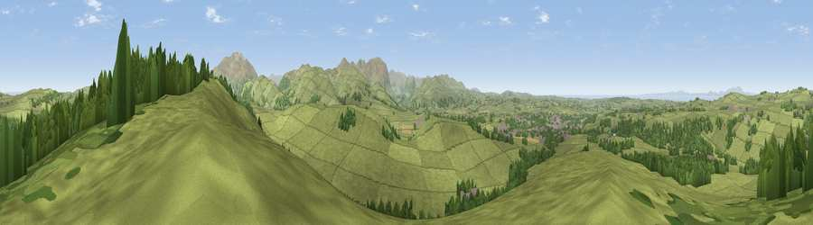

Viewpoint near Embleton
#2715 in England · top 27% of its area beats it · near EmbletonThe view, rendered

A 360° render of this exact spot computed from the terrain model, tree cover and land cover — summer colours, afternoon light, calibrated against photographs of famous viewpoints. Real trees, hedges and buildings will differ in detail.
The panorama
Grey silhouette: terrain skyline in each direction (720 bearings, Earth curvature and refraction included). Dashed green: skyline with trees (+15 m) and buildings (+8 m) as obstacles. Blue strip: how far the ground is visible on each bearing.
Where the view opens
Wedge length = distance to the farthest visible ground on that bearing (vegetation-aware). Rings at 10, 25 and 50 km.
What fills the view
78% grassland · 17% woodland · 2% cropland · 2% built-up ·
Angular shares of the visible panorama (visual magnitude), not map area. Landscape diversity 0.29 (0–1 Shannon).
Key numbers
More beautiful places nearby
The staircase of upgrades: each row has a higher view potential than everything closer. Driving times are estimates from straight-line distance, calibrated against real road routing — check an actual route before setting out.
| Place | Direction | Drive | Score |
|---|---|---|---|
| Viewpoint near Embleton | E · 1 km | ~2 min | 76.4 |
| Watch Hill (Setmurthy Common) | E · 1 km | ~3 min | 77.4 |
| Viewpoint near Embleton | ESE · 5 km | ~11 min | 81.8 |
| Viewpoint near Embleton | ESE · 6 km | ~12 min | 84.6 |
| Viewpoint near Thornthwaite | SE · 8 km | ~15 min | 85.5 |
| Ullock Pike | ESE · 10 km | ~19 min | 89.4 |
| Long Side | ESE · 10 km | ~20 min | 89.5 |
| Viewpoint near Finsthwaite | SSE · 49 km | ~70 min | 90.3 |
54.67474, -3.32004 · source: screening · position refined by local search. Computed location — check access rights before visiting.